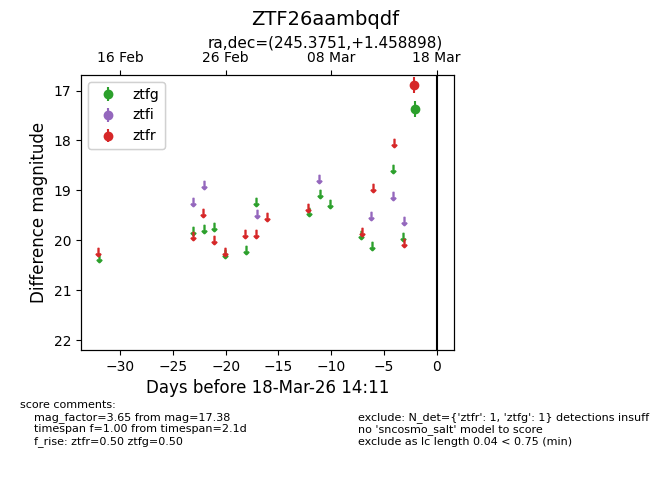
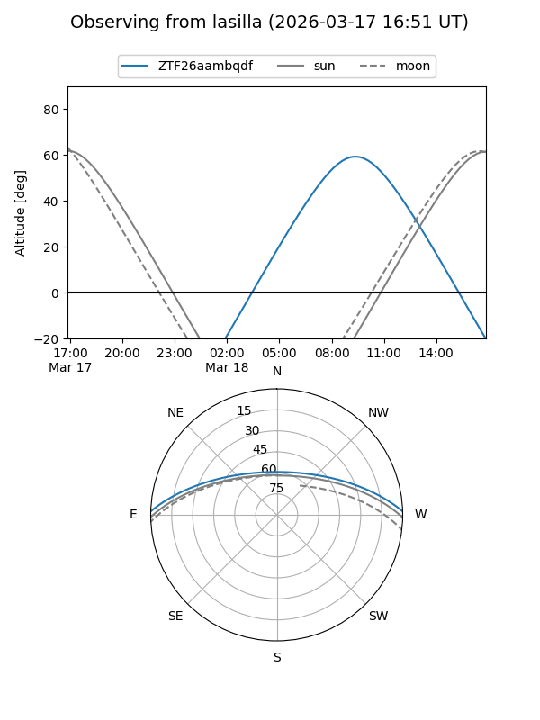
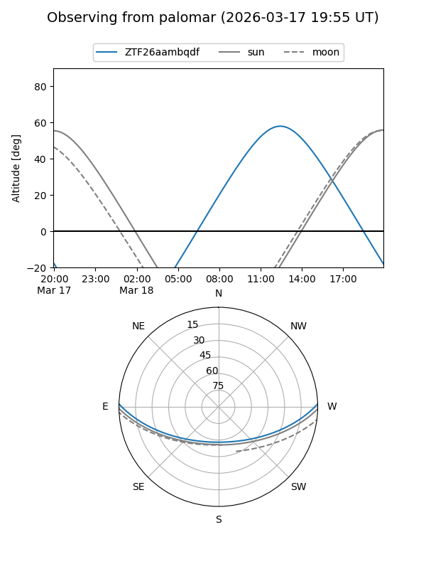

ZTF26aambqdf
Target ZTF26aambqdf at 2026-03-18 14:13
Aliases and brokers:
FINK: link
Lasair: link
ALeRCE: link
alt names
ZTF26aambqdf (ztf,fink_ztf)
Coordinates:
equatorial (ra, dec) = 245.3751,+1.45890
equatorial (HMS+DMS) = 16:21:30.03,+01:27:32.03
galactic (l, b) = (15.1287,+33.57522)
Flags:
Photometry:
last ztfg=17.38, ztfr=16.89
1 ztfg, 1 ztfr detections
Lightcurve

Visibility


Additional plots